Drying Shrinkage
Clays used in ceramics shrink when they dry because of particle packing that occurs as inter-particle water evaporates. Excessive or uneven shrinkage causes cracks.
Key phrases linking here: drying shrinkage, dry shrinkage - Learn more
Details
All clays shrink during drying from their wet plastic state. In ceramics, drying shrinkage is calculated as (wet length - dry length) / wet length * 100 (by contrast, in geotechnical engineering (soil mechanics, earthworks, roads, earthfill dams etc) it is calculated as (wet length - dry length) / dry length * 100.
Ceramic bodies, glazes and engobes contain clays. Most people who have anything to do with using plastic clay will note that the drying shrinkage increases as does plasticity, and with that increase comes more drying cracks. This happens because plastic clays have finer particle sizes and thus greater particle surface area and more inter-particle water holding things together. As that water is removed during drying, the resultant particle packing shrinks the entire mass more. Notwithstanding this, testing effort can reward you with sweet spots in drying performance (in mixes of ball clay, kaolin, feldspar, silica, for example) where higher-than-expected plasticity can be achieved with lower-than-expected drying shrinkage.
The amount of shrinkage is actually much more complex than just particle size, many other factors come into play. These include the distribution of sizes, the shapes, the proportion of other types of particles present and their sizes and shapes, the amount of water and air present, the surface chemistry of the particles, the degree of electrolytic reaction between them and the water and the degree of mechanical densification occurring during machine forming.
Drying shrinkage can easily be measured (see test procedures linked on this page), this enables one to compare one clay with another. From this value we can infer things about relative plasticity and particle size. The shrinkage measurement results are more meaningful when methods of sample preparation and water content or stiffness are controlled and when they are done as a matter of routine over time. It is not always practical to make shrinkage test bars, some clays shrink so much and dry so slowly (e.g. bentonite, ball clay) that the raw powder must be mixed with a calcined version of itself or with a non-plastic (like silica). Other clays can lack plasticity and make it difficult to roll and form test bars (it may be necessary to add a plastic material).
A typical plastic pottery clay, for example, shrinks about 6%. Highly plastic bodies can shrink up to about 7.5% before drying cracks become difficult to avoid. Shrinkage can be reduced to 5% or below before plastic bodies become too difficult to form effectively. Bodies used in manufacturing and formed by machines can have lower plasticities (and thus drying shrinkages) but organic binders are often needed to achieve sufficient dry strength. Bodies containing extremely high percentages of aggregate can have near-zero drying shrinkage.
Casting bodies shrink much less during drying than plastic ones and cracking is not generally an issue. However if any edges are left unfinished and they have small tears from the trimming process, these can provide a site for cracks to begin (when they would not otherwise appear).
If the water content of a plastic-forming body is high (e.g. it is very soft) drying shrinkage can increase very significantly. Highly plastic bodies can have 25% or more water, these will not only have high shrinkage but will dry more slowly. As an example, a body that normally shrinks 6% when stiff could shrink 7% or more when soft. This may not sound like much of a difference, but it can dramatically increase ware cracking. Dust pressing bodies, at the other extreme, can have as little at 7% water and drying shrinkage is almost zero.
Potters and industry know-how to cope with the shrinkage of the bodies they use such that minimal drying cracks or breakage during handling occurs. Shrinkage can even be used as an ally, an example, in slip casting, the shrinkage pulls the piece away from the mold so it can be extracted.
Different bodies exhibit differing drying shrinkage curves. The majority of shrinkage occurs early in the drying process (that is why softer-than-usual plastic bodies shrink so much more). If different parts of a piece are allowed to dry such that variations in water content develop across the cross section (e.g. from drafts in the drying room or ware of varying wall thickness and air exposure) the stage is set for cracks to occur. At higher water contents there is still enough plasticity to absorb dimensional changes without cracking, but as the densification process proceeds and the piece becomes increasingly rigid the variations in shrinkage across the ware will generate cracks to relieve the stress.
Related Information
How to dry these mugs evenly to avoid cracks
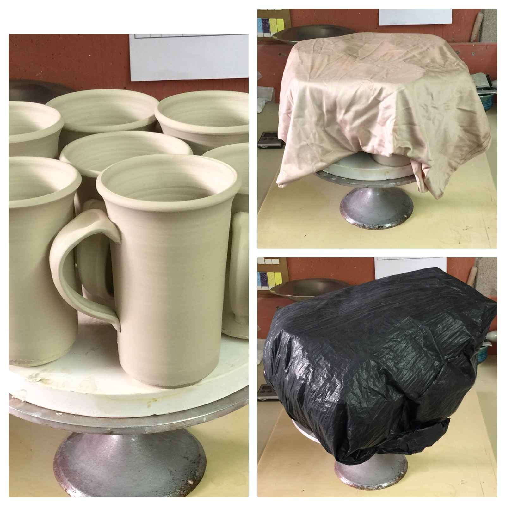
This picture has its own page with more detail, click here to see it.
It is important that during all stages of drying gradients (sections of different stiffnesses) do not develop in pieces. Thus I like to attach handles as soon after throwing as possible. An unavoidable gradient develops anyway because the rims need to be stiff enough to attach the handles without going out of shape too much. Now how can I stiffen these mugs for trimming and even them out at the same time? The first key is to put them on a plaster bat (as I have done here). Then I cover them with a fabric (arnel fabric works well because it flows). Then I put the whole thing into a large garbage plastic bag folded underneath to seal it. The plaster stiffens the bases and absorbs moisture in the air to stiffen the walls also. The next day every part of the piece is an even leather hard.
Same clay disk dried fast (heat gun) and slower (fan) for the DFAC test
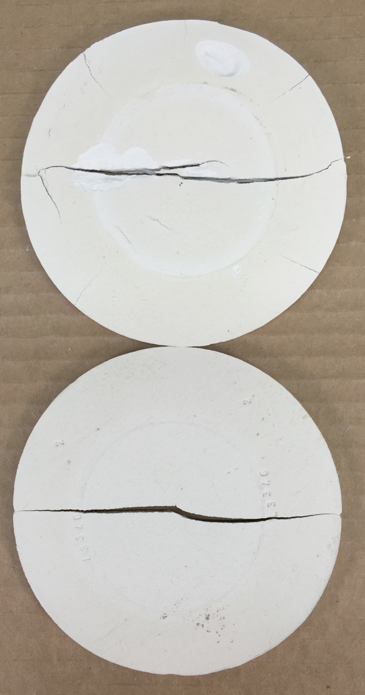
This picture has its own page with more detail, click here to see it.
The center portion was protected while the perimeter dried and shrank first (reshaping the central section). No cracks. But as the central area hardened it reached a point where it was stiff enough to impose forces that forced two cracks to start from the outer edge (opposite each other), these grew inward and found each other. Then the gap widened to dissipate more of the stresses (the width of this gap relates to the drying shrinkage of the clay). But the accelerated pace in the top disk left more stresses, they were relieved by the other hairline cracks from the outer edge, these happened at the very end.The lesson: The stage was set for cracking on both samples very early in the drying process. But the actual cracks occurred very late. Accelerating the process only created small extra edge cracks (on top disk).
How to interpret the crack in a DFAC drying disk
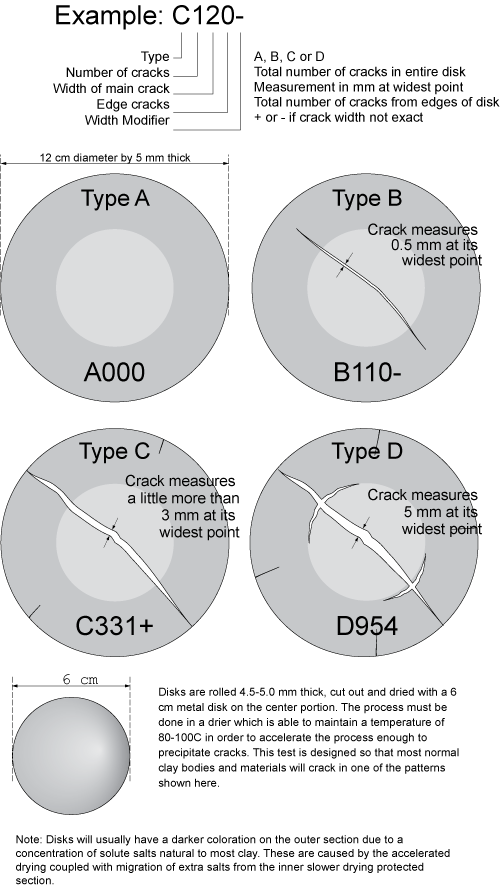
This picture has its own page with more detail, click here to see it.
Drying disks used for the DFAC test are 12cm in diameter and 5mm thick (wet). A crack pattern develops in almost all common pottery clays as they shrink during drying. This happens because the center portion is covered and stays soft while the perimeter dries hard. This sets up a tug-of-war with the later-drying inner section pulling at the outer rigid perimeter and forcing a crack (starting from the center). If the clay has high plasticity and dry strength it can pull so hard from the center that cracks appear at the outer dried edge to relieve the tension. Or, it can create cracks that run parallel to the outer edge but at the boundary between the inner and outer sections. The nature, number and width of the cracks are interpreted to produce a drying factor that can be recorded.
Do grog additions always produce better drying performance?

This picture has its own page with more detail, click here to see it.
This DFAC test for drying performance compares a typical white stoneware body (left) and the same body with 10% added 50-80 mesh molochite grog. The character of the crack changes somewhat, but otherwise, there is no improvement. While the grog addition reduces drying shrinkage here by 0.5-0.75% it also cuts dry strength (as a result, the crack is jagged, not a clean line). The grog vents water to the surface better, notice the soluble salts do not concentrate as much. Notice another issue: The jagged edges of the disk, it is more difficult to cut a clean line in the plastic clay.
Grog does not always have the intended effect
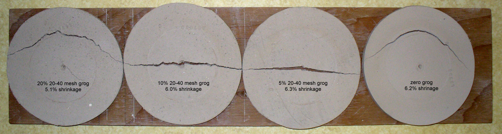
This picture has its own page with more detail, click here to see it.
These DFAC test disks (drying performance) show that minor additions of grog do not reduce the fired shrinkage of this medium fire stoneware much. Nor do they improve its drying performance. Even at 20% grog, although the addition has reduced drying shrinkage and narrowed the crack somewhat, it is still there and even resembles the zero-grog version. A possible reason is that this body is coarse-particled, having a relatively small total particle surface area. The addition of the grog has significantly increased the total area.
Stonewares dry better than porcelains

This picture has its own page with more detail, click here to see it.
The plastic porcelain has 6% drying shrinkage, the coarse stoneware has 7%. They dried side-by-side. The latter has no cracking, the former has some cracking on all handles or bases (the lower handle is completely separated from the base on this one). Why: The range of particle sizes in the stoneware impart green strength. The particles and pores also terminate micro-cracks.
Various grogs available in North America
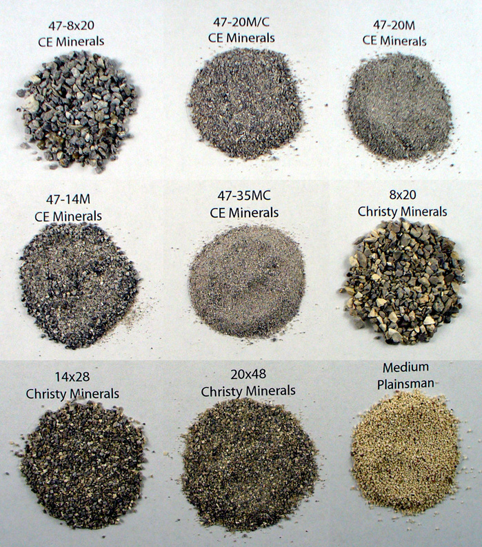
This picture has its own page with more detail, click here to see it.
Examples of various sized grogs from CE Minerals, Christy Minerals, Plainsman Clays. Grogs are added to clays, especially those used for sculpture, hand building and industrial products like brick and pipe (to improve drying properties). The grog reduces the drying shrinkage and individual particles terminate micro-cracks as they develop (larger grogs are more effective at the latter, smaller at the former). Grogs having a narrower range of particle sizes (vs. ones with a wide range of sizes) are often the most effective additions. Grogs having a thermal expansion close to that of the fired body, a low porosity, lighter color and minimal iron contamination are the most sought after (and the most expensive).
High drying shrinkage of Plainsman A2 ball clay (DFAC disk)
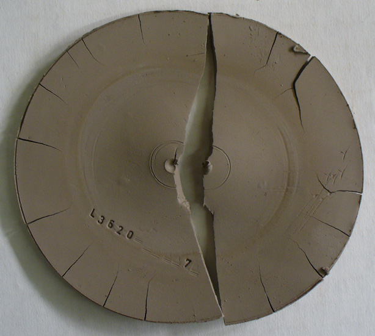
This picture has its own page with more detail, click here to see it.
This DFAC test disk shows the incredible drying shrinkage that a ball clay can have. Obviously if too much of this is employed in a body recipe one can expect it to put stress on the body during drying. Nevertheless, the dry strength of this material far exceeds that of a kaolin and when used judiciously it can really improve the working properties of a body giving the added benefit of extra dry strength.
Particle size drastically affects drying performance
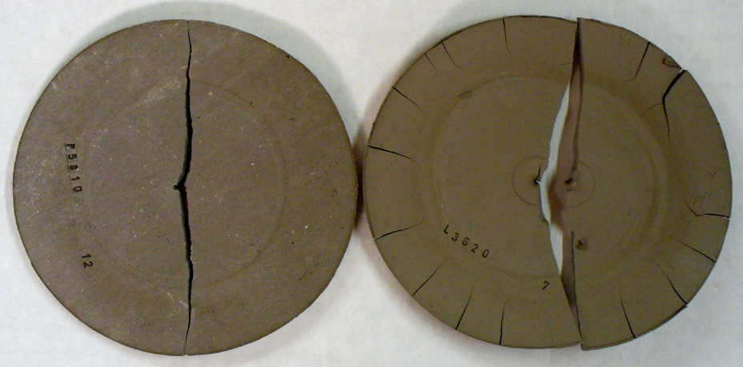
This picture has its own page with more detail, click here to see it.
These DFAC testers compare the drying performance of Plainsman A2 ball clay at 10 mesh (left) and ball milled (right). This test dries a flat disk that has the center section covered to delay its progress in comparison to the outer section (thus setting up stresses). Finer particle sizes greatly increase shrinkage and this increases the number of cracks and the cracking pattern of this specimen. Notice it has also increased the amount of soluble salts that have concentrated between the two zones, more is dissolving because of the increased particle surface area.
A bentonitic clay that takes a long time to dry
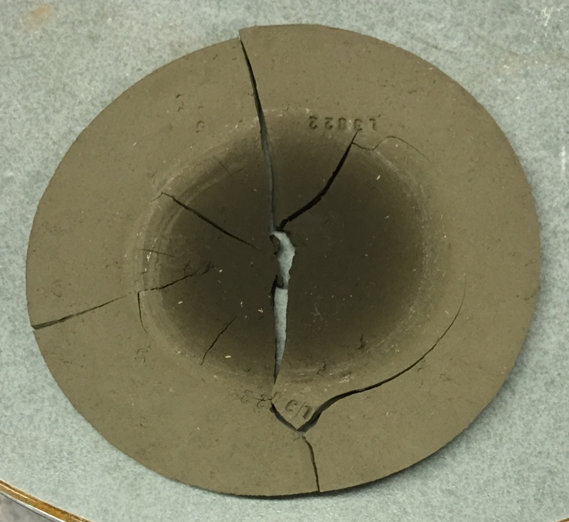
This picture has its own page with more detail, click here to see it.
I finally gave up trying to dry the inner section of this DFAC test. During that test the inner part of the disk is shielded from the air flow or heat lamp. This sets up a shrinkage gradient that encourages cracking of the sample. But with some clays drying can be so slow that it can take a days. Serious cracking and high drying shrinkage almost always accompanies this phenomenon.
Turbo-charge plasticity using bentonite, hectorite, smectite.

This picture has its own page with more detail, click here to see it.
These are porosity and fired shrinlage test bars, code numbered to have their data recorded in our group account at Insight-live.com. Plainsman P580 (top) has 35% ball clay and 17% American kaolin. H570 (below it) has 10% ball clay and 45% kaolin, so it burns whiter (but has a higher fired shrinkage). P700 (third down) has 50% Grolleg kaolin and no ball clay, it is the whitest and has even more fired shrinkage. Crysanthos porcelain (bottom, from China) also only employs kaolin, but at a much lower percentage, thus is has almost no plasticity (suitable for machine forming only). Do H570 and P700 sacrifice plasticity to be whiter? No, with added bentonite they have better plasticity than P580. Could that bottom one be super-charged? Yes, 3-4% VeeGum or Bentone (smectite, hectorite) would make it the most plastic of all of these (at a high cost of course).
An example of a DFAC drying test of a bentonitic clay
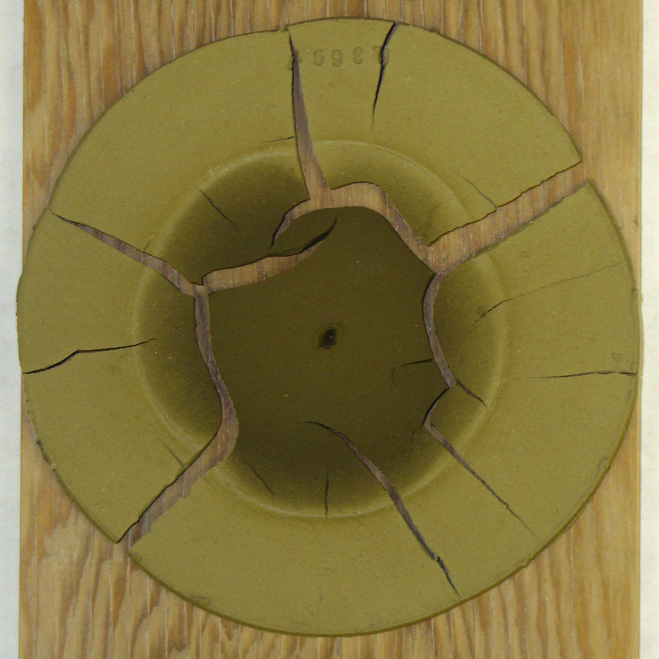
This picture has its own page with more detail, click here to see it.
This disk has dried under heat (with the center part protected) for many hours. During that process it curled upward badly (flattening back out later). It is very reluctant to give up its water in the central protected section. Obviously it shrinks alot during drying and forms a network of cracks. When there are this many cracks it is difficult to characterize it, so a picture is best.
Closeup of Halloysite particles
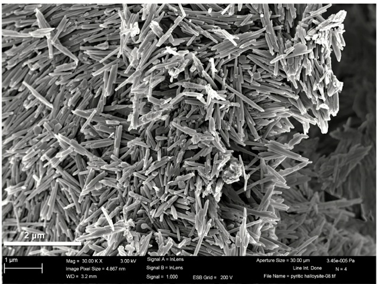
This picture has its own page with more detail, click here to see it.
Electron micrograph showing Dragonite Halloysite needle structure. For use in making porcelains, Halloysite has physical properties similar to a kaolin. However it tends to be less plastic, so bodies employing it need more bentonite or other plasticizer added. Compared to a typical kaolin it also has a higher fired shrinkage due to the nature of the way its particles densify during firing. However, Dragonite and New Zealand Halloysites have proven to be the whitest firing materials available, they make excellent porcelains.
Drying shrinkage + firing shrinkage ≠ total shrinkage
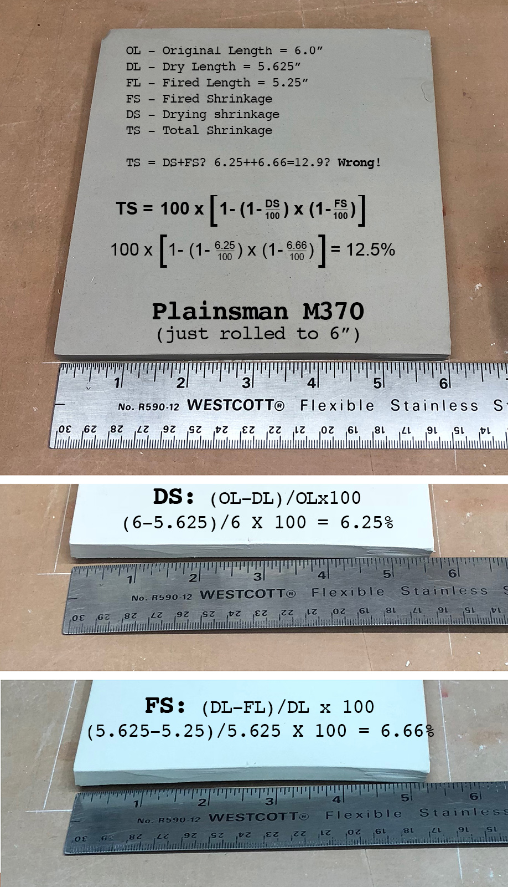
This picture has its own page with more detail, click here to see it.
Plainsman Clays, for example, publishes dry and fired shrinkage data for their clay bodies. The former is the shrinkage from wet-to-dry. The latter is the shrinkage from dry-to-fired. You cannot add the dry and fired numbers together to get the total because the two are based on different starting points. Consider this example: 6.25 dry shrinkage + 6.66 fired = 12.9 whereas the actual total shrinkage is 12.5%. Shown is the way to calculate the total shrinkage correctly if you only have drying and fired values (thanks to Tom Hittie for deriving this for us). Of course no one is going to bother actually doing this calculation! So just remember that the actual total is a little less than adding the two together.
It is impossible to dry this clay. Yet we did it. How?

This picture has its own page with more detail, click here to see it.
These are made from a 50:50 mix of bentonite and ball clay! The drying shrinkage is 14%, more than double that of normal pottery clay. These should have cracked into many small pieces. Yet notice that the handle joins with the walls are flawless, not even a hairline crack (admittedly the base has cracked a little). Remember that the better the mixing and wedging, the smaller the piece, the thinner the walls, the more even wall thickness, the better the joins, the fewer the sharp contour changes, the more even the water content is throughout the piece (during the entire drying cycle) and the damper the climate the more successful drying will be. What did it take to dry these in our arid climate? One month under cloth and plastic, changing the cloth every couple of days. Implementing these same principles on a normal clay body will assure drying success.
Links
| Glossary |
Plasticity
Plasticity (in ceramics) is a property exhibited by soft clay. Force exerted effects a change in shape and the clay exhibits no tendency to return to the old shape. Elasticity is the opposite. |
| URLs |
https://insight-live.com/insight/help/It+Starts+With+a+Lump+of+Clay-433.html
Case Study: Testing a Native Clay Using Insight-Live.com |
 PayPal | No tracking, No ads, No paywall, No transient content! Just organized, concise information constantly updated and improved. Was this helpful? Consider supporting me. |
| By Tony Hansen Follow me on        |  |
Got a Question?
Buy me a coffee and we can talk 

https://digitalfire.com, All Rights Reserved
Privacy Policy